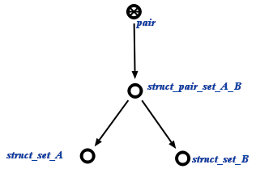

Задачей scp-программы поиска всех множеств пар и троек, мощность которых не соответствует их типу
является поиск всех множеств пар и троек, мощность которых не соответствует их типу. Первым входным параметром данной scp-программы является множество, куда будут занесены все множесва пар и троек, мощность которых не соответствует типу. Вторым входным параметром является множество пар или троек, некорректные примеры которого будут находиться. Трейтий параметр - это число, с кторым будет сравниваться мощность примера поданного множества. Четвёрты параметр - структура в которой будут проверятся множества пар и троек. Ниже представлена пример одной из конструкций, по которой осуществляется поиск:
